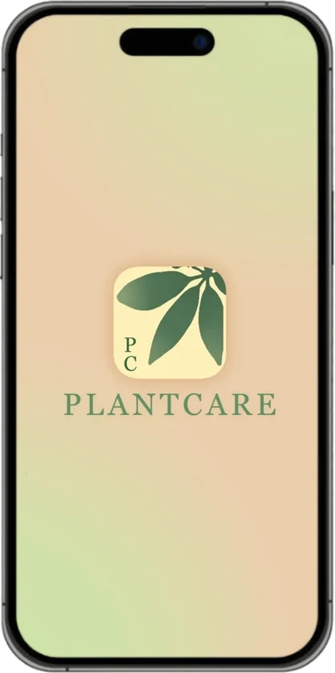
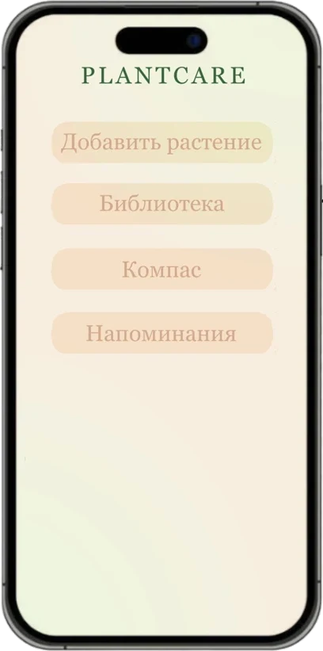
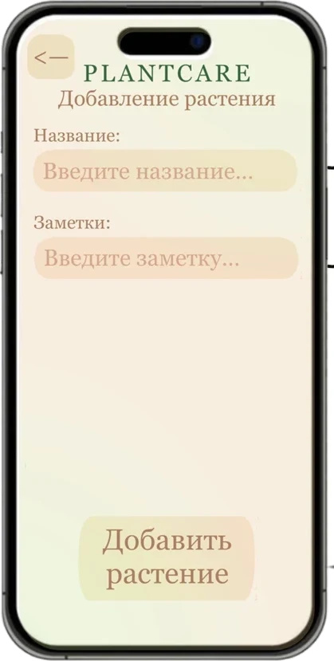
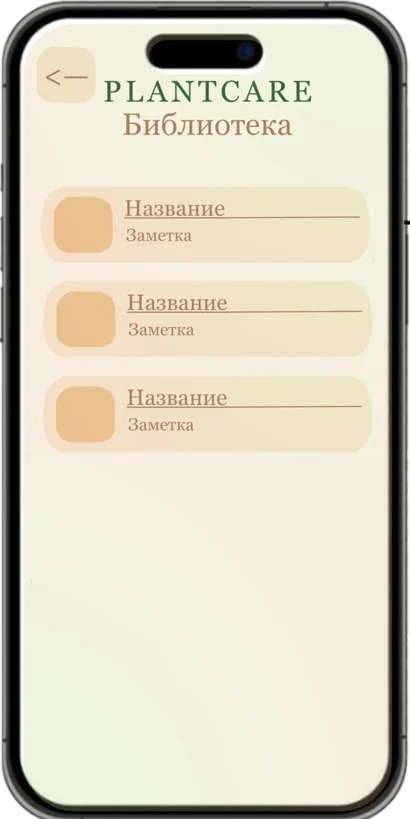
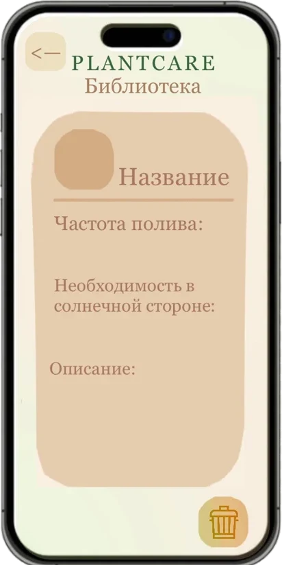
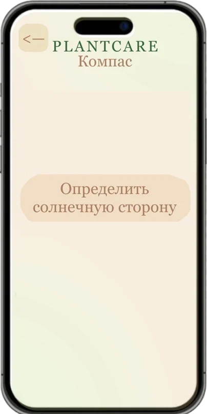
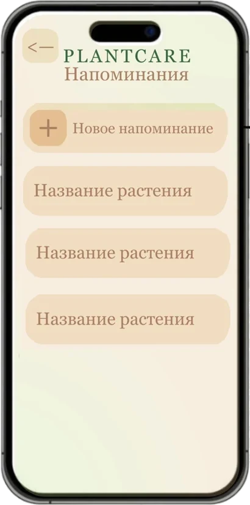

🔎
Забываем о поливе
У каждого растения свой график, летом и зимой он разный. Держать в голове пять-десять графиков почти невозможно, а заметки быстро теряются.
PLANTCARE · Android-приложение
PLANTCARE подскажет, когда полить монстеру, на какое окно поставить кактус и чем фикус отличается от фикуса. Библиотека растений, напоминания и компас солнечной стороны в одном приложении.

О проекте
Мобильное приложение для Android, которое хранит ваши растения, напоминает об уходе и подсказывает, на какое окно их лучше поставить.
Для тех, у кого дома есть растения, но нет времени или опыта, чтобы помнить, как ухаживать за каждым.
Убирает догадки из ухода: когда поливать, сколько света нужно и подходит ли растению конкретный подоконник.
Проблема
Мы покупаем растение, ставим на первый свободный подоконник и поливаем «когда вспомним». Через пару месяцев оно желтеет, и непонятно почему.
У каждого растения свой график, летом и зимой он разный. Держать в голове пять-десять графиков почти невозможно, а заметки быстро теряются.
«Яркий рассеянный свет» на бирке ничего не говорит о вашем окне. Мало кто знает, куда выходят окна квартиры и сколько солнца они получают.
Советы по уходу приходится собирать по форумам и статьям, и они часто противоречат друг другу.

Решение
PLANTCARE собирает в одном месте то, что раньше приходилось помнить, искать и угадывать.
Найдите его в базе на русском, английском или латыни, и карточка ухода подтянется сама.
Компас телефона определит сторону света и скажет, хватит ли растению солнца.
Приложение напомнит о поливе, а кнопка «Готово» в уведомлении начнёт новый отсчёт.
Для кого проект
Купили первое растение или получили в подарок и не знают, с чего начать.
Работа, учёба, поездки. Нужен помощник, который вспомнит про полив за них.
Десятки растений с разными графиками, и всё нужно держать под контролем.
Переехали и хотят понять, какие окна в квартире солнечные и что где расставить.
Что умеет PLANTCARE
Четыре раздела, четыре кнопки в главном меню. Компас и базу растений можно попробовать прямо на этой странице.
Начните вводить название на русском, английском или латыни, и приложение найдёт растение в базе. Нет в базе? Добавьте своё с частотой полива и светом.
Ваши растения и карточка ухода для каждого: свет, полив летом и зимой, влажность, температура, грунт, подкормка, пересадка и токсичность.
Поднесите телефон к окну и зафиксируйте направление. PLANTCARE рассчитает, сколько солнца получает окно и какие растения там будут счастливы.
Полив, подкормка, опрыскивание и пересадка. Выберите интервал и время, а кнопка «Готово» прямо в уведомлении отметит уход и начнёт новый отсчёт.
Попробуйте прямо здесь
В приложении направление определяет компас телефона. Здесь можно выбрать сторону вручную: нажмите на сторону света и посмотрите, какие растения из базы подойдут.
Много солнца с утра до обеда. Хорошо подходит почти всем растениям, кроме тенелюбивых.
0 растений из базы хорошо растут у такого окна:
База растений
Та же база, что внутри приложения. Ищите на русском, английском или латыни, регистр и «ё» не важны.
Такого растения в базе пока нет. В приложении его можно добавить вручную 🌿
Дизайн
Кремовый фон, бежевые карточки, зелёный логотип и крупные кнопки.





Анкета
Мы проверяем идеи на реальных людях, прежде чем развивать приложение дальше. Ответьте на несколько вопросов о том, как вы ухаживаете за растениями. Это займёт около 3 минут и анонимно.
По результатам анкеты будет решено, какие функции развивать первыми.
Приложение, которое помнит о поливе, знает 50 растений и находит для каждого подходящее окно. Проект в разработке, и ваш опыт поможет сделать его лучше.